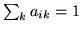

Add a transition from state i to state j with probability prob for all transition matrices in itemList. The remaining transitions out of state i are rescaled so that . For example,
AT 1 3 0.1 {*.transP}
would add a skip transition to all loaded models from state 1 to state 3
with probability 0.1.